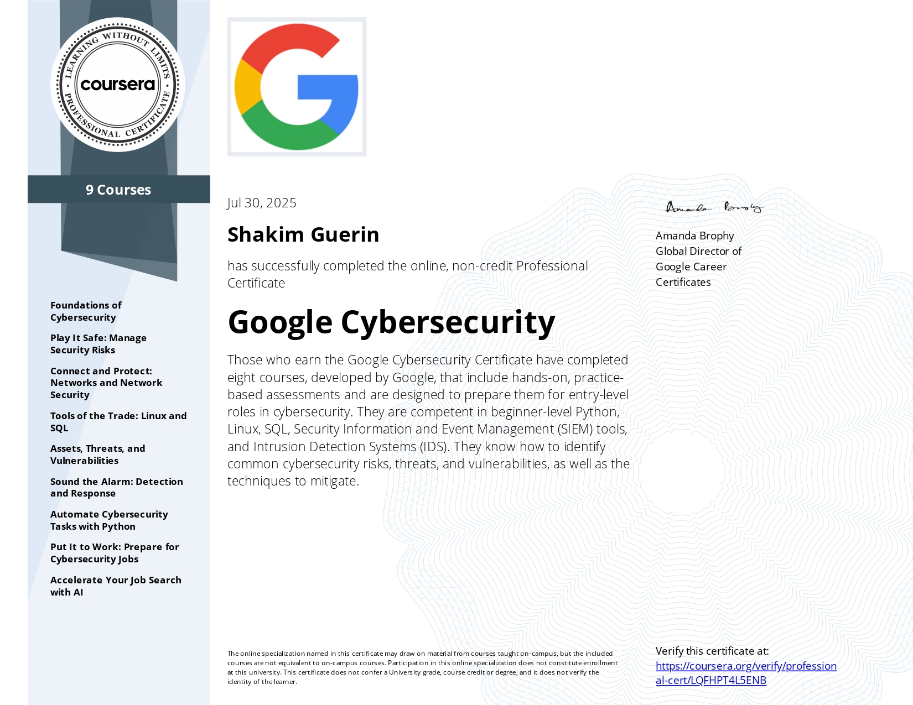
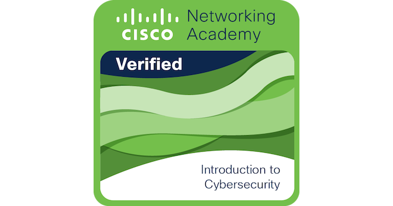
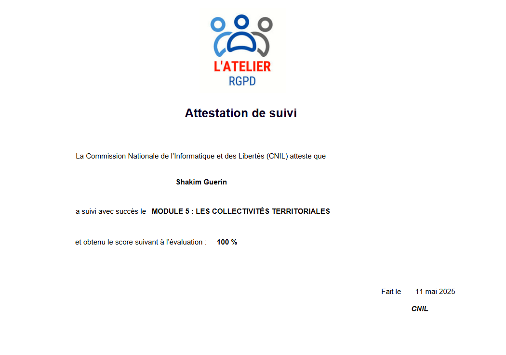
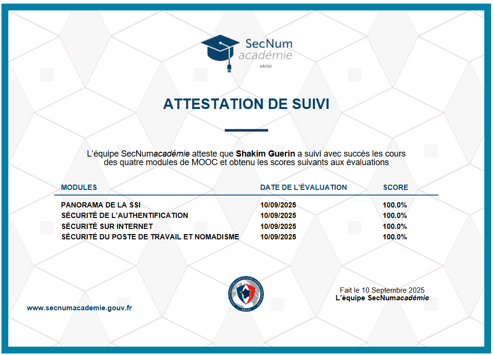

À propos
┌──(admin㉿portfolio)-[~]
$ whoami
Shakim Guerin - Administrateur systèmes et réseaux
$ cat profil.txt
Étudiant en BTS SIO option SISR, je recherche une alternance pour un Bachelor Administrateur systèmes et réseaux à partir de septembre 2026.
Je travaille sur des environnements Windows Server, Linux, virtualisation et infrastructures réseau sécurisées, avec une forte appétence pour la supervision.
Objectif : rejoindre une équipe IT, monter en compétences sur l'administration, la sécurité et l'exploitation d'infrastructures professionnelles.
Éducation
CESI - Projet alternance
Angoulême, France — 09/2026 à 06/2027Bachelor administrateur systèmes et réseaux
Campus La Châtaigneraie
Le Mesnil-Esnard, France — 09/2024 à 06/2026BTS | Services Informatiques aux Organisations — Spécialité : Solution d'Infrastructure Système et Réseau
Campus La Châtaigneraie
Le Mesnil-Esnard, France — 09/2021 à 06/2024Baccalauréat Professionnel | Systèmes Numérique — Spécialité : Réseaux Informatiques et Systèmes Communicants
Expérience
Micro Technique - Rouen, France
Stage - Administrateur systèmes et réseaux | 01/2026 à 02/2026- Migration de serveurs Windows 2012 vers Windows 2022
- Installation et configuration d'une infrastructure Multi-WAN avec optimisation du réseau
- Renommage du domaine Active Directory et intégration au cœur de réseau du siège social
- Mise en place et administration de serveurs Active Directory, de production et de services RDS
- Configuration et gestion des règles de sécurité réseau sur des pare-feu
- Gestion de la hotline et traitement des incidents et demandes utilisateurs
Micro Technique - Rouen, France
Job d'été - Technicien réseau | 08/2025- Gestion de la hotline et traitement des incidents utilisateurs
- Configuration et maintenance d'équipements réseau
- Interventions de proximité sur l'infrastructure
Micro Technique - Rouen, France
Stage - Technicien réseau | 05/2025 à 06/2025- Mise en place et administration de serveurs Active Directory, de production et de services RDS
- Configuration complète de pare-feu et gestion des règles de sécurité réseau
- Déploiement automatisé de comptes administrateurs locaux via PowerShell et GPO
- Administration de serveurs : DHCP, DNS, NAS
- Configuration d'équipements réseau : switchs, routeurs et firewalls
- Réalisation du brassage dans les baies informatiques
CENEC - Málaga, Espagne
Stage - Technicien sécurité réseau | 03/2023- Sauvegarde et restauration des configurations des équipements réseau critiques
- Gestion des accès utilisateurs et des droits d'accès réseau
- Configuration de VLAN pour segmenter et sécuriser le réseau
- Surveillance des journaux réseau pour détecter et analyser les incidents de sécurité
Compétences
Administration système
Cybersécurité
Certifications Cybersécurité

Google - Certificat Professionnel en Cybersécurité
Voir le certificat
Cisco - Introduction a la cybersécurité
Voir le certificat
CNIL - Certification RGPD
Voir le certificat